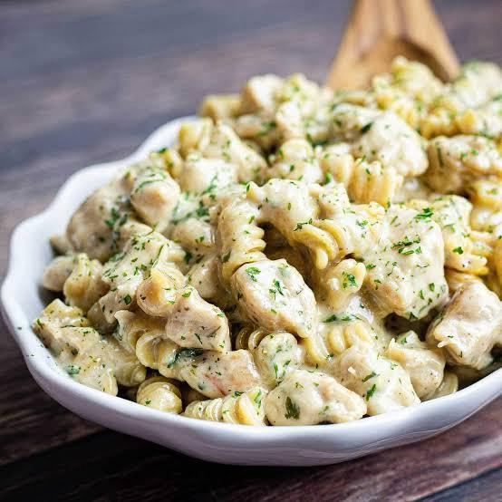

Creamy Garlic Parmesan Pasta
Food Description
A rich and creamy pasta dish with garlic, parmesan, and a hint of black pepper for a comforting and
delicious meal.
Total time: 20 minutes
Ingredient
- 200g pasta (spaghetti or penne)
- 1 tablespoon olive oil
- garlic cloves, minced
- 1 cup heavy cream
- 1/2 cup grated Parmesan cheese
- 1 teaspoon black pepper
- Salt to taste
- Fresh parsley for garnish (optional)
Praperation Steps
- Cook the pasta according to package instructions. Drain and set aside.
- In a pan, heat olive oil over medium heat and sauté the minced garlic until fragrant (about 1-2 minutes).
- Add the heavy cream to the pan and bring to a simmer.
- Stir in the Parmesan cheese and black pepper. Continue stirring until the sauce thickens (about 3-5 minutes).
- Toss the cooked pasta in the sauce, ensuring it's fully coated. Add salt to taste.
- Serve immediately, garnished with fresh parsley if desired.